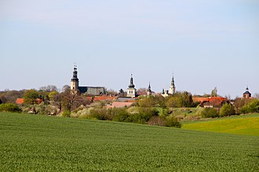
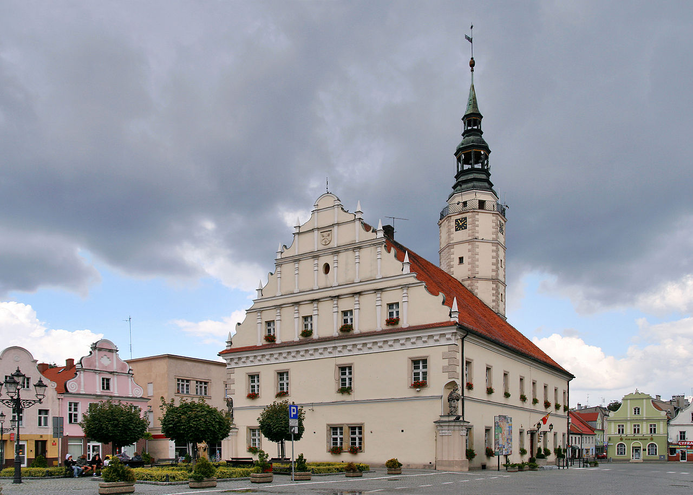

Głogówek is a small historic town in southern Poland. It is situated on the Osobloga River, in Opole Voivodeship of the greater Silesian region. The city lies approximately 35 kilometres (22 miles) from Opole, the capital of the voivodeship, and is about 10 km (6 mi) from the Czech border.


The river originates Petrovický potok near the village Petrovice. Petrovice is a municipality and village in Bruntál District in the Moravian-Silesian Region of the Czech Republic. It has about 100 inhabitants. The village is well preserved and is protected by law as a village monument zone. Petrovice lies approximately 210 kilometres (130 mi) west of Prague and 27 kilometres (17 mi) north of Bruntál.